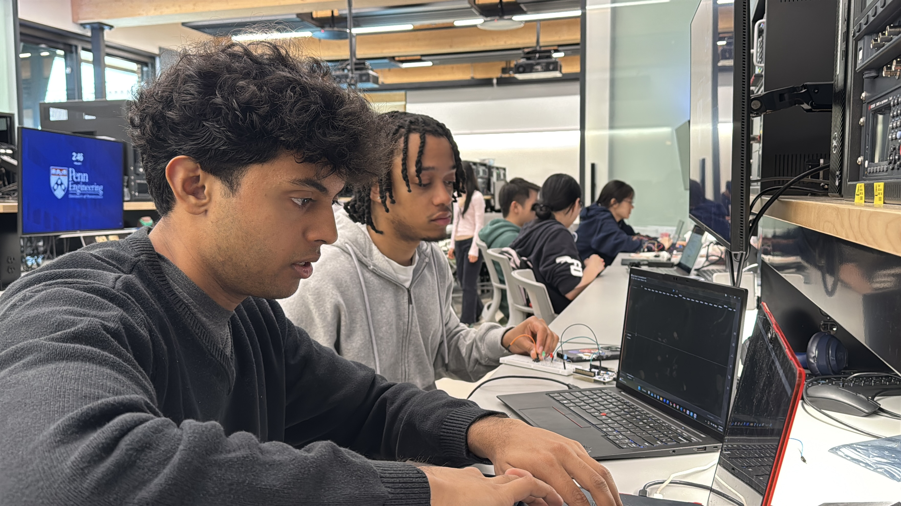

Final Project Website
Medical translation where it is needed most.
EDGE MD is designed for clinics and field settings where doctor-patient communication can break down due to language barriers. The goal is a portable English-Spanish translator that runs on an embedded edge pipeline.
Why this matters
From our README motivation: when providers and patients do not share a language, care quality and speed can drop. Relying on ad-hoc interpreters is not always safe or practical in urgent environments.
Project at a glance
STM32 + Raspberry Pi
Hybrid edge architecture
4 Stages
Record -> STT -> Translate -> TTS
UART Link
Realtime board-to-board audio transport